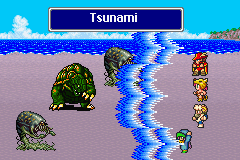

Terrain
อาชีพ "Geomancer" สามารถเรียกใช้พลังจากธรรมชาติโจมตีศัตรูได้
ซึ่งรูปแบบการโจมตีจะขึ้นอยู่กับพื้นที่ที่เรียกใช้ และ Level ของผู้ใช้
ยิ่ง Level มาก รูปแบบการโจมตีก็จะยิ่งรุนแรงมากขึ้น
Earthquake
(Outdoor), (Mountain)
Earth Element Attack /All (ยกเว้นศัตรูที่ลอยตัว)
Gale Cut (Wind Slash)
(Outdoor), (Cave)
Wind Element Attack /All (ไม่มีผลกับ Boss)
Gust
(Outdoor), (Mountain)
Wind Element Attack /Single
Tornado (Twister)
(Outdoor)
ลด HP ของศัตรูลง เหลือตัวเลขหลักเดียว /Single
Sonic Boom
(Building)
ลด HP ของศัตรูลง 3 ใน 4 /Single
Branch Arrow
(Forest)
Physical Attack /Single
Branch Spear
 (Forest)
(Forest)
Physical Attack /Single (รุนแรงมาก)
Leaf Dance (Rage)
(Forest)
Physic (/Wind) Attack /All (ทำให้ศัตรูติดสถานะมืดมน
Dark)
Vine Hell
ทำให้ศัตรูช้าลง (Slow) /All
Desert Storm
(Desert)
Wind/Earth Element
Attack /All (รุนแรงมาก)
Dust Storm (Dust)
(Desert)
Wind/Earth Element
Attack /All (ทำให้ศัตรูติดสถานะมืดมน Dark)
Quicksand
(Desert)
ทรายดูด ดูดศัตรูลงไปใต้พื้นทราย (ตายทันที) /Single
Heat Sand
Fire/Earth Element
Attack /All
Faen Fantom (Ghibli)
 (Beach)
(Beach)
ฆ่าศัตรูให้ตายภายในครั้งเดียว /Single
Big Tsunami (Big Wave)
(Ship)
Water Element Attack /All (รุนแรงมาก)
Tsunami

(Beach), (Ship)
Water Element Attack /All
Waterfall
Water Element Attack /Single
Whirlpool
(Ship)
Water (/????) Element Attack /All
Cave-in
(Mountain)
Physical Attack /x4 (ก้อนหินตกลงมาใส่ศัตรู 4 ก้อน รุนแรงมาก)
Stalactite
(Cave)
Physical Attack /Single
Will-o-Wisp
(Cave), (Dungeon), (Wasteland)
Fire Element Attack /Single (บางครั้งจะทำให้ศัตรูติดสถานะสับสน
Confuse)
Bottomless Swamp (Peat Bog)
(Wasteland)
โคลนดูด ดูดศัตรูลงไปใต้พื้นทราย (ตายทันที) /All
Poison Mist
 (Wasteland)
(Wasteland)
Poison Attack /All